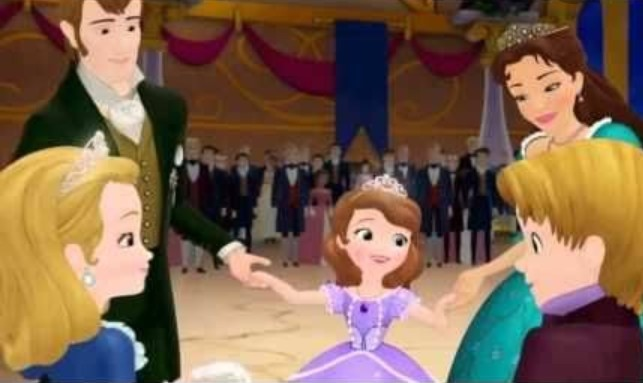

SOFIA THE FIRST
SCENE 1

Sofia the First(once upon a princess)Presents
Once upon a time,in a magical kingdom of Enchsncia,there lived a younf girl namedsofia
.Sofia lived with a simple life,working in a shoe shop with her mother,miranda.One day,they wew summoned by King Ronald the ||
who need a new pair of slippers.Sofia and her mother finally arrived at the castle.Sofia
was very excited to see the king.Miranda placed the slipper on the king's foot.It was a perfect fit and so are they.
King and Marinda married soon..
SCENE 2

'Sofia it's time to go!Come on honey,the coach is waiting'.Miranda,sofia's mother called her.'Coming!'
Sofia quickly took important a picture which has a drawing of her mother and hers.It's very important for her. As she climbed onto
the coach, 'she heard her friends,ruby and jade!' shouted good luck Sofia Don't forget
about us!'Bye jade.Bye ruby!' Sofia replied with a smile.'Bye Sofia!!!'A Few minutes later Sofia said with an Excitement tone.'Mom!' we are almost there
wonder what our room was like.'Sofia ,since we lived in a castle,you get to have your own bedroom
Miranda said ,Smiling!.'Yes!!!'Sofia Exclaimed..
SCENE 3
Now, Sofia’s mom is the queen of Enchancia and Sofia is the princess.
The trouble is, Sofia doesn’t really know anything about being a princess. She never had to do a royal wave, she is not sure when to curtsy, or even which fork to use at dinner! “I’ll never be as perfect a princess as my new step-sister Amber,” Sofia says.
SCENE 4

SCENE 5

THE END